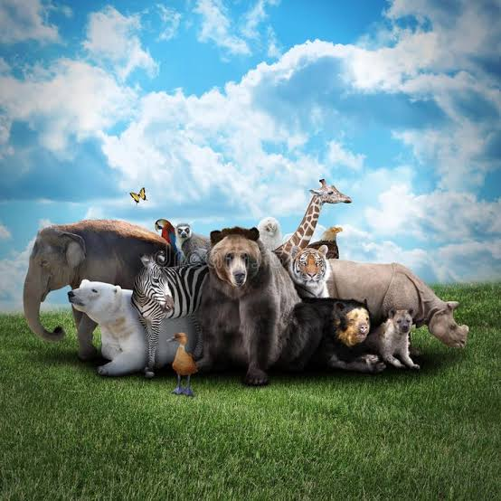

Conservation
Zoos can contribute to conservation through managed populations, public awareness and partnerships that support biodiversity protection.
NATIONAL ZOOLOGICAL GARDEN
A place for wildlife, learning and biodiversity awareness.
The National Zoological Garden in Pretoria is part of SANBI. It provides a public setting where people can experience wildlife and learn about biodiversity.
The garden supports a combination of conservation, research, education and visitor-focused activities. These functions help connect the public with South Africa's biodiversity.

Zoos can contribute to conservation through managed populations, public awareness and partnerships that support biodiversity protection.
Interpretation and educational activities help visitors understand animals, ecosystems, threats to biodiversity and responsible environmental behaviour.
Scientific and conservation knowledge can inform the management of species and support broader biodiversity objectives.
The National Zoological Garden is located in Pretoria, Gauteng, South Africa.